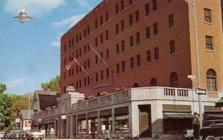

If we have been the subject of close range observation for some time now, two overriding features of our planet's surface will have attracted the attention of observers and thus provided a "target" for eventual contact.
Imagine a group of "beings" gazing down at Earth's surface every day, seeing, essentially, the same thing day in and day out: The lights of our various urban areas providing artificial illumination over large areas of land, with the single largest concentration being in the Northeastern area of North America, particularly the New York City metropolitan area.
Every evening, like clockwork, these lights come on, stay on and then go off around dawn year after year, decade after decade without change, as predictable and common as sunset and sunrise. EXCEPT on two occasions:
November 9th, 1965. The great Northeastern Blackout, beginning around dusk and soon affecting tens of millions across a huge swath of Earth including New York City and Long Island, New Jersey, about half of Pennsylvania, virtually all of New York State and much of New England, Eastern Ontario and most of Quebec. All was suddenly dark where there had been light.
Never before and only once since, (August 2003) had such a loss of power occured anywhere on such a grand scale.These unusual incidents were certain to attract the attention of outside observers if (and this is a BIG IF,) outsiders are watching. A sudden black void where there had been light across tens of thousands of square miles would be easily visible from near space.
The Village of Saranac Lake NY lies at an elevation of 1534 feet at the foot of a long chain of rivers and lakes. Upper Saranac Lake spills over a falls into Middle Saranac Lake which falls into Lower Saranac Lake and then Lake Oseetah and Lake Flower and finally over a dam into the Saranac River, past Mt.Pisgah and into the Saranac River which meanders northeastward to Lake Champlain.
Decades ago the Village of Saranac Lake was a thriving little community of resorts and health care facilities. In the mid 1800's, Captain Pliny Miller, one of the early settlers of Saranac Lake, built a small dam and power generating station at the final spill point at the corner of Main Street and Lake Street.This dam was later taken over by the Paul Smith's Electric Light and Power Company.
The power plant produced more than enough electricity for the immediate region so lines were laid and power transported to the greater grid outside the area.
When the first Blackout struck, electric power was literally sucked out of a regional grid, like a candle flame deprived of oxygen, tripping like dominoes from region to region, sucking power and light until there was a vast vacuum of darkness across the Northeast. When this sucking pattern became apparent, power technicians across the country created firewalls to "contain" the outage, but it took them twelve hours to figure out how to get what was down back up.
He pulled the switch and immediately the lights of Saranac Lake came back on. This was the ONLY place in the Blackout region that had lights. And, as it turned out, Saranac Lake was virtually DEAD CENTER of the entire area, and its little point of light shone like a Beacon in the center of the bulls-eye of darkness.
This certainly would have attracted the attention of anybody or anything watching from space IF they were watching. To an observer from afar the process of lights on, lights off, then Saranac Lake back on right in the middle of the void, would have provided a focus, or target, for future attention. Never before, and never again until 1958 had such an unusual event occurred.
Although the story was written by Bill McLaughlin in a way which made it clear that the space man was a spoof, a lot of people have taken it seriously. Updike said that the story around Rome is that Air Base officials at Plattsburgh have clamped down on The Enterprise and won't let us, or anyone else, print anything further about the space man who supposedly is held in secret custody.
Actually, the creature, which was said to have carried a scroll of parchment-like paper, possibly containing a message or peaceful greeting, was none other than Bill McLaughlin's ten year-old son, Billy, (Shakes) rigged out in a space helmet and wearing a gas mask.

WATCH OUT, ROSWELL, SARANAC LAKE HAS IT'S OWN AREA 51!